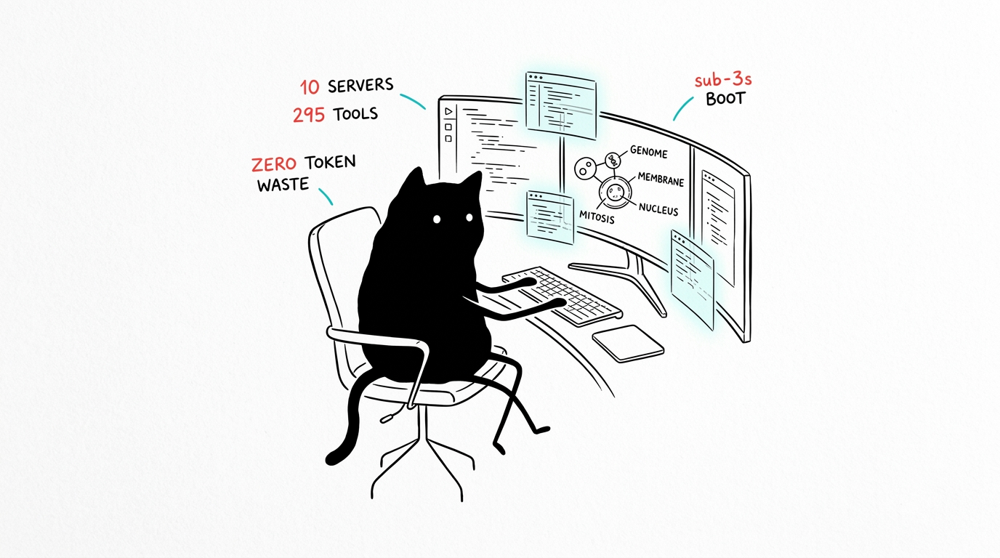

Pameran & Bukti Nyata
Rekaman gerbang verifikasi dan deployment produksi nyata yang disintesis secara menyeluruh oleh HeLa Phenotype — hasil dari alur kerja C yang terdokumentasi di 05 Alur Kerja.

Gerbang Verifikasi
| Gerbang | Hasil | Bukti / Mekanisme |
|---|---|---|
setup.sh doctor | 10/10 READY | Handshake Stdio JSON-RPC per sel |
npm test | 13/13 dalam ~2.5s | 10 handshake + 3 sinergi lintas-MCP |
npm run test:matrix | 80/80 | Akurasi skema kombinasi profil × klien |
Demonstrasi Video
Rekaman demonstrasi langsung dari dua sel yang menjalankan tugas utamanya.
DEMO_01 // PHENOTYPE — token desain & palet warna OKLCH
DEMO_02 // GENOME — grafik pengetahuan hidup dengan FTS5
Rekaman Terminal (Asciinema)
Tangkapan sesi terminal asli dari gerbang verifikasi. Putar ulang dengan perintah asciinema play <file> atau buka di pemutar kompatibel .cast.
| Rekaman | Perintah | Cakupan Pengujian |
|---|---|---|
| setup.cast | ./setup.sh | Proses instalasi dan build |
| doctor.cast | ./setup.sh doctor | Diagnostik kesehatan 10 organel sel |
| matrix.cast | npm run test:matrix | 80 kombinasi profil × klien agen |
| integration.cast | npm test | Suite tes integrasi 13 pipeline |
Eksibisi Produksi: Ellis UI Archive
Dapat diakses langsung di demo-designer.glassgallery.my.id — 24 sistem desain komponen kustom yang dibuat melalui rantai alat hela-phenotype:design_tokens → generate_8state_component, diverifikasi langsung di browser via hela-cytosol, dan dicatat ke dalam hela-genome. Ini adalah bukti alur kerja C yang dieksekusi terhadap target deployment nyata, bukan sekadar mock.
design_tokens action=theme) → Tailwind (design_tokens action=tailwind) → Komponen (generate_8state_component) → Verifikasi (browser_screenshot) → Simpan Memori (memory_edit action=add_observations). Setiap langkah merupakan pemanggilan alat MCP yang terdokumentasi.